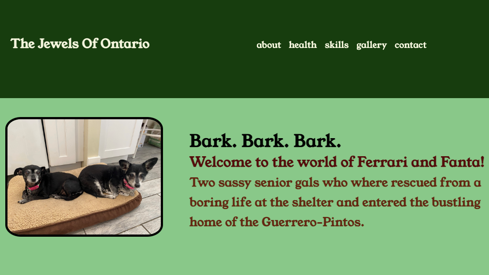
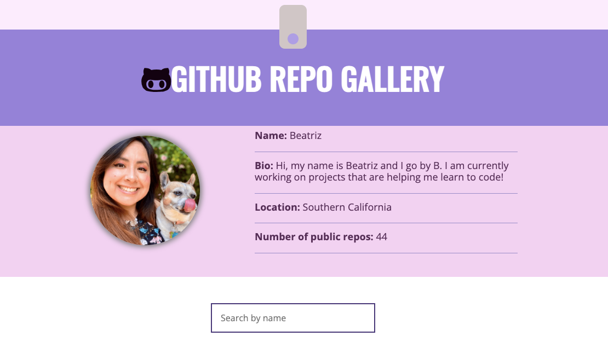
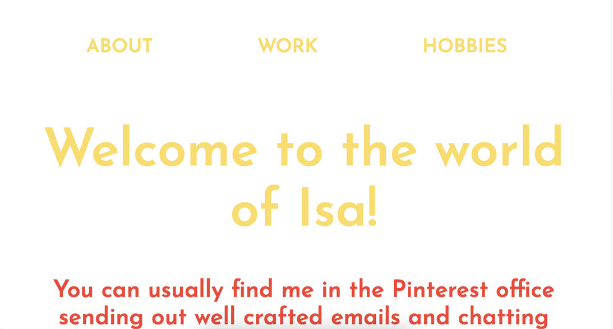

Todo Sobre Beatriz
Hola, yo soy Beatriz. Desarrolladora Frontend, cocinera, y panadera... y fastidiosa según mis hermanas. Me puedes encontrar en la cocina o en la computadora. Me paso los días haciendo lo que me gusta, buscando recetas o codificaciones nuevas.
Usando los lenguajes basicos de HTML y CSS, puedo transformar ideas a paginas. Agregando JavaScript o React, puedo modificar tu pagina web al sitio de tus sueños. Vivimos en tiempos donde dependemos de nuestros telefonos y computadoras más y más, por eso mi meta es crear paginas que son accessibles para todos, faciles de entender e usar, y ✨bonitas✨.
En la cocina, me encanta preparar unas enchiladas verdes, un esquite rapidito o unas costillas con bbq cocinadas a fuego lento. Pero si prefieres algo dulce, el pastel de chocolate me queda riquisimo! Entre más complicada la receta, más gusto me da hacerla.
Proyectos
Ferrari and Fanta
Pagina para dos perritas senior que fueron adoptadas, Ferrari y Fanta.
Pagina en Vivo
JavaScript | CSS3 | HTML5 |
Manipulando el DOM
GitHub
Gallery

Visita mi pagina de GitHub! Usando la interfaz de programación de aplicaciones, puedes ver mis repositorios.
Pagina en VivoAPIs | JavaScript | Manipulando el DOM
Isaura's
Website

Pagina hecha para mi hermana, Isaura. Queria una pagina que demuestra carerra y su vida personal.
Pagina en VivoHTML5 | CSS3 | Media Queries | JavaScript
Habilidades y Herramientas
- Control de Versiones
- JavaScript
- Diseño Web Adaptable
- HTML5
- CSS3
- Python
- APIs
- Git & the Command Line
- Chrome DevTools
- GitHub
- Visual Studio Code